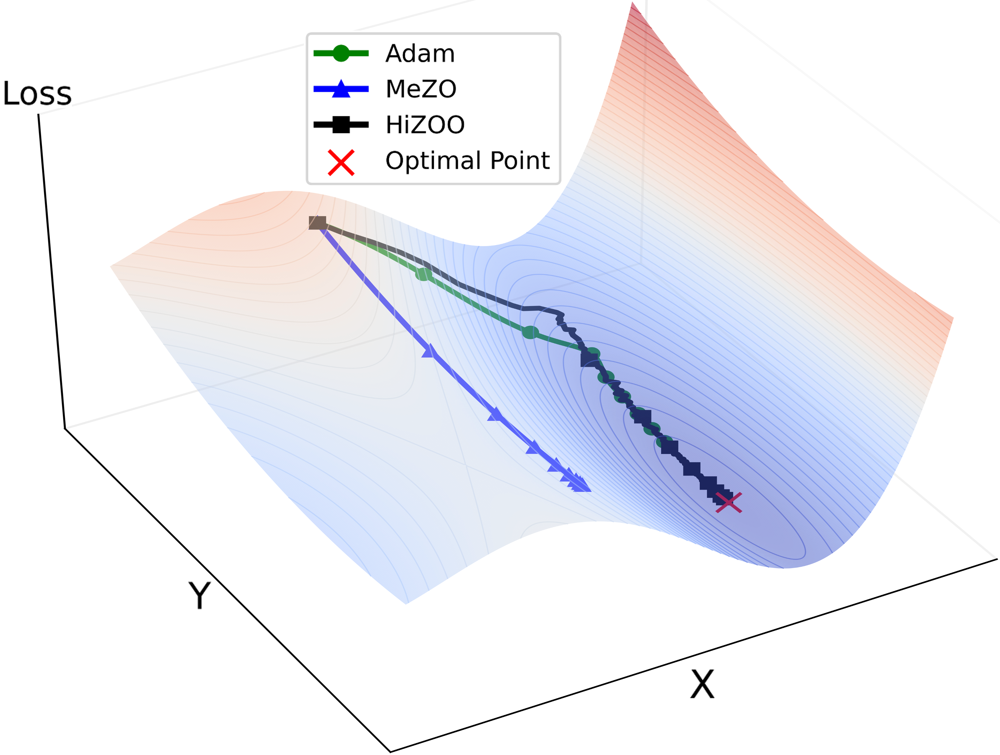
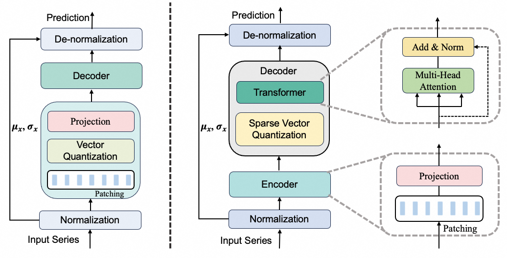

|
Yanjun Zhao I'm a 2nd-year MS student in Xi’an Jiaotong University under the supervision of Prof.Yi Qian. I also collaborate closely with Prof.Haishan Ye. In 2022, I obtained my bachelor’s degree in Computer Science from Xi’an Jiaotong University. I am currently a research intern of Decision Intelligence Lab-Alibaba DAMO Academya>, where I work with Doc. Liang Sun and Doc. Tian Zhou . My research focus on Time series, Spatio-temporal data mining and LLM. |

|
{kind=link}
Research |
|  |
Second-Order Fine-Tuning without Pain for LLMs: A Hessian Informed Zeroth-Order Optimizer
Yanjun Zhao*, Sizhe Dang*, Haishan Ye, Guang Dai, Yi Qian, Ivor W.Tsang arXiv , 2024, github HiZOO, a diagonal Hessian informed zeroth-order optimizer which is the first work to leverage the diagonal Hessian to enhance zeroth-order optimizer for fine-tuning LLMs. |
|  |
Sparse-VQ Transformer: An FFN-Free Framework with Vector Quantization for Enhanced Time Series Forecasting
Yanjun Zhao*, Tian Zhou*, Chao Chen, Liang Sun, Qian Yi, Rong Jin arXiv, 2024, github Sparse-VQ cooperates with Reverse Instance Normalization (RevIN) to reduce noise impact and capture sufficient statistics for forecasting, serving as an alternative to the Feed-Forward layer (FFN) in the transformer architecture. |
 |
A Differentiable Sparse Vector Quantization (SVQ) for Spatio-Temporal
Forecasting
Chao Chen*, Tian Zhou*, Yanjun Zhao, Liang Sun, Qian Yi, Rong Jin arXiv, 2024, github SVQ leverages sparse regression for succinct representation, which theoretically and practically favored over classical clusteringbased vector quantization methods. |
 |
GCformer: An Efficient Framework for Accurate and Scalable Long-Term Multivariate Time Series Forecasting
Yanjun Zhao*, Ziqing Ma* Tian Zhou*, Liang Sun Mengni Ye, Qian Yi, CIKM, 2023, github GCformer combines a structured global convolutional branch for processing long input sequences with a local Transformer-based branch for capturing short, recent signals. |
Honors and Awards
|
Activities and Volunteering
|
|
|